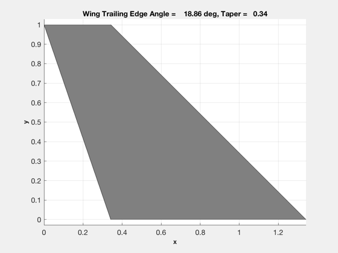
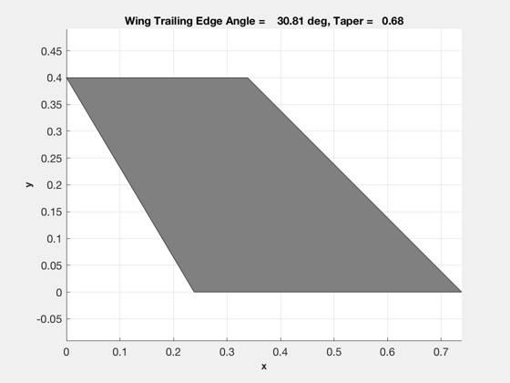
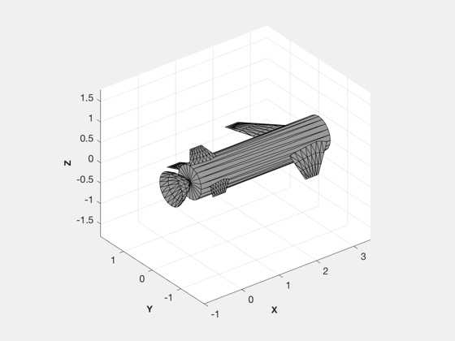
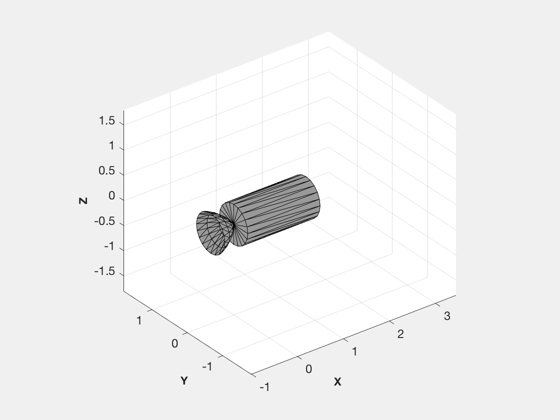
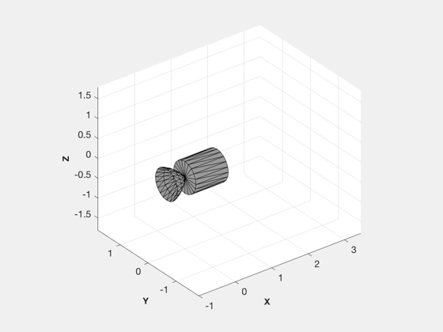
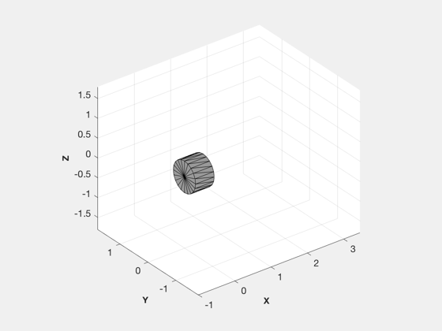
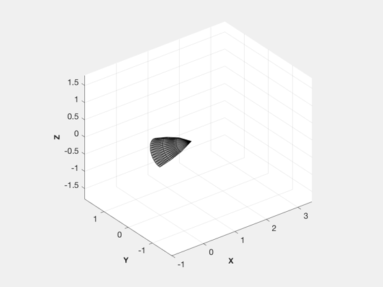
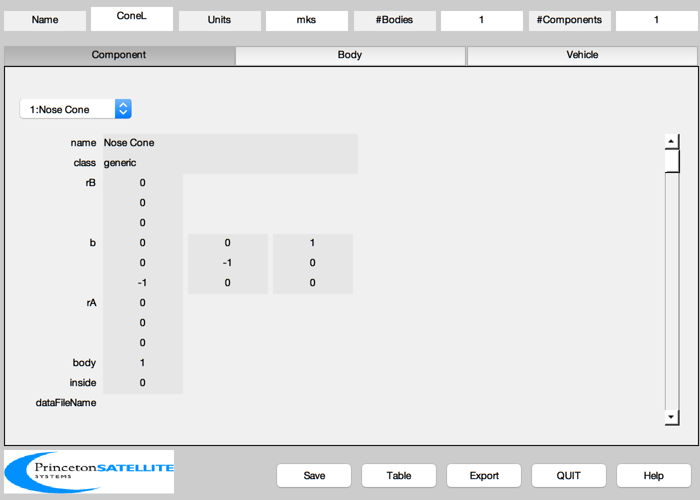
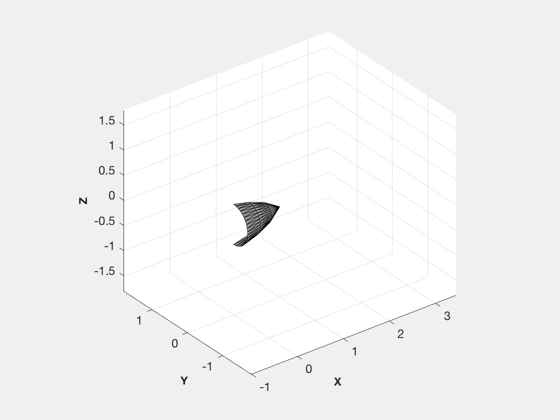

Three stage to orbit launch vehicle.
Employs air launch.
The numbers for this example were created by hand. They are generally representative, but are not based on any actual vehicle.
See also OptimalPayloadRatio, SS2O, EP2M, WingSizingForPullUp, WingAreaToTaper, WingFromParameters, BuildCADModel
%-------------------------------------------------------------------------- %-------------------------------------------------------------------------- % Copyright (c) 2012 Princeton Satellite Systems, Inc. % All rights reserved. %-------------------------------------------------------------------------- clear x % Parameters %----------- mPayload = 100/2.205; sigmaUS = 0.1; iSpECAPS = 235; dVU = 0.3; dBooster = 0.8; rBooster = dBooster/2; lNoseCone = 1.0; rhoSolidF = 1350; rhoECAPS = 1000; rhoAl = 2700; lGulfStream = 27.23; tShell = 4e-3; lNozzle = 0.5; thrust0 = 30000; pullUpAccel = 3; % g alphaPullUp = 4; % deg sweepAngle = 45; wingSpan = 2.0; rootChord = 1.0; thicknessRatio = 0.1; tailSpan = 0.8; tailChord = 0.5; shellColor = [0.32 0.32 0.32]; skinThickness = 0.002; % Star 48 http://www.spaceandtech.com/spacedata/motors/star48_specs.shtml %------------------------------------------------------------------------ iSpSolid = 294; sigma = 111.3/2134.3; % Compute the fuel for the ECAPS stage %------------------------------------- [mF, mT] = SS2O( iSpECAPS, mPayload, sigmaUS, dVU ); mPayload = mPayload + mT; h = 25000*12*.0254/1000; m = 0.8; a = StdAtm(h); rEarth = 6378.165; v = a.speedOfSound*m/1000; mI = 2858; hOrbit = 350; rOrbit = hOrbit + rEarth; vOrbit = sqrt(3.98600436e5/rOrbit); vEarth = (2*pi/86400)*(rEarth+h); vDrag = 1; deltaV = vOrbit + vDrag - vEarth - v; uE = iSpSolid*ones(1,3)*9.806/1000; e = [sigma sigma sigma]; [pR,pRTot] = OptimalPayloadRatio( deltaV, uE, e ); [m0, mf] = EP2M( e, pR, mPayload ); mMargin = mI - m0(1); aBooster = pi*dBooster^2/4; mFuel = m0 - mF; massSolid = mFuel.*(1+sigma); lS = mFuel./(rhoSolidF*aBooster); lU = 0.5+mF /(rhoECAPS* aBooster); thrust = thrust0*lS(1:3)/lS(1); mDot = thrust/(9.806*iSpSolid); tBurn = mFuel./mDot; lTotal = lU + lNoseCone + sum(lS); lS = [lS+lNozzle lU]; lMax = max(lS); yZLim = [-dBooster-wingSpan/2 dBooster+wingSpan/2]; mS = m0 - mf; cM = sum([mS mPayload].*lS)/m0(1); iSP = [iSpSolid iSpSolid iSpSolid iSpECAPS 0 0]; mFuel = [mFuel mF 0 0]; % Size the wing %-------------- wingArea = WingSizingForPullUp( pullUpAccel, m, h, 2*pi, alphaPullUp*pi/180, thrust(1), m0(1), sweepAngle*pi/180 ); tailArea = 0.2*wingArea; wingArea = 0.8*wingArea; WingAreaToTaper( rootChord, wingArea, wingSpan, sweepAngle*pi/180 ); [taper, sweepTrailing] = WingAreaToTaper( rootChord, wingArea, wingSpan, sweepAngle*pi/180 ); [vWing, fWing] = WingFromParameters( rootChord, wingArea, wingSpan, sweepAngle*pi/180, thicknessRatio ); WingAreaToTaper( tailChord, tailArea, tailSpan, sweepAngle*pi/180 ); [vTail, fTail] = WingFromParameters( tailChord, tailArea, tailSpan, sweepAngle*pi/180, thicknessRatio ); [vRudd, fRudd] = WingFromParameters( 1.4*tailChord, 1.2*tailArea, tailSpan, sweepAngle*pi/180, thicknessRatio ); k = 1; x{k,1} = 'Gulfstream 350 length'; x{k,2} = sprintf('%8.2f m', lGulfStream); k = k + 1; x{k,1} = 'Gulfstream 350 payload'; x{k,2} = sprintf('%8.2f kg', mI); k = k + 1; x{k,1} = 'Booster mass'; x{k,2} = sprintf('%8.2f kg', m0(1)); k = k + 1; x{k,1} = 'Booster margin'; x{k,2} = sprintf('%8.2f kg', mMargin); k = k + 1; x{k,1} = 'Booster length'; x{k,2} = sprintf('%8.2f m', lTotal); k = k + 1; x{k,1} = 'Booster diameter'; x{k,2} = sprintf('%8.2f m', dBooster); k = k + 1; x{k,1} = 'Delta V'; x{k,2} = sprintf('%8.2f km/s', deltaV); k = k + 1; x{k,1} = 'Solid Isp'; x{k,2} = sprintf('%8.2f s', iSpSolid); k = k + 1; x{k,1} = 'ECAPS Isp'; x{k,2} = sprintf('%8.2f s', iSpECAPS); k = k + 1; x{k,1} = 'Mach separation'; x{k,2} = sprintf('%8.2f ', m); k = k + 1; x{k,1} = 'Velocity separation'; x{k,2} = sprintf('%8.2f km/s', v); k = k + 1; x{k,1} = 'Altitude separation'; x{k,2} = sprintf('%8.2f km', h); k = k + 1; x{k,1} = 'Drag loss'; x{k,2} = sprintf('%8.2f km/s', vDrag); k = k + 1; x{k,1} = 'Orbit altitude'; x{k,2} = sprintf('%8.2f km', hOrbit); k = k + 1; x{k,1} = 'Density solid fuel'; x{k,2} = sprintf('%8.2f kg/m^3', rhoSolidF); k = k + 1; x{k,1} = 'Density ECAPS fuel'; x{k,2} = sprintf('%8.2f kg/m^3', rhoECAPS); k = k + 1; x{k,1} = 'ECAPS correction'; x{k,2} = sprintf('%8.2f km/s', dVU); k = k + 1; x{k,1} = 'Burn times'; x{k,2} = sprintf('[%8.2f %8.2f %8.2f] s', tBurn); k = k + 1; x{k,1} = 'Thrust'; x{k,2} = sprintf('[%8.1f %8.1f %8.1f] N', thrust); k = k + 1; x{k,1} = 'Solid stage lengths'; x{k,2} = sprintf('[%8.1f %8.1f %8.1f] m', lS(1:3)); k = k + 1; x{k,1} = 'Pull up'; x{k,2} = sprintf('%8.1f g', pullUpAccel); k = k + 1; x{k,1} = 'Angle of attack'; x{k,2} = sprintf('%8.1f deg', alphaPullUp); k = k + 1; x{k,1} = 'Wing sweep angle'; x{k,2} = sprintf('%8.1f deg', sweepAngle); k = k + 1; x{k,1} = 'Wing area'; x{k,2} = sprintf('%8.2f m^2', wingArea); k = k + 1; x{k,1} = 'Wing trailing sweep angle'; x{k,2} = sprintf('%8.2f deg', sweepTrailing*180/pi); k = k + 1; x{k,1} = 'Wing taper'; x{k,2} = sprintf('%8.2f ', taper); k = k + 1; x{k,1} = 'Wing root chord'; x{k,2} = sprintf('%8.2f m', rootChord); k = k + 1; x{k,1} = 'Wing span'; x{k,2} = sprintf('%8.2f m ', wingSpan); k = k + 1; x{k,1} = 'Center of mass'; x{k,2} = sprintf('%8.2f m ', cM); k = k + 1; x name = {'Stage1' 'Stage2' 'Stage3' 'Stage4' 'ConeR' 'ConeL'}; type = [2 1 1 5 3 4]; for k = 1:length(name) % Initialize %----------- BuildCADModel( 'initialize' ); BuildCADModel( 'set name' , name{k} ); BuildCADModel( 'set units', 'mks' ); % Core %----- m = []; m.name = 'Core'; m.rHinge = [0;0;0]; m.bHinge.b = eye(3); m.previousBody = []; BuildCADModel('add body', m ); % This creates the connections between the bodies %------------------------------------------------ BuildCADModel( 'compute paths' ); b = [0 0 1;0 1 0;-1 0 0]; rNoseCone = (0.4/0.25)*[0.25 0.2 0.125 0]; switch type(k) case 1 mass = massSolid(k); m = CreateComponent( 'make', 'cylinder', 'rUpper', rBooster, 'rLower', rBooster, 'h', lS(k),'n',20, 'rA',[0;0;0],... 'name', 'Shell', 'body', 1, 'mass', mass, 'b', b, ... 'faceColor', shellColor, 'inside', 0); BuildCADModel( 'add component', m ); [v, f] = NoseCone( rNoseCone, lNozzle, 20, 0 ); massNozzle = 2*pi*mean(rNoseCone)*lNozzle*rhoAl*skinThickness; m = CreateComponent( 'make', 'generic', 'vertex', v, 'face', f, 'rA',[-lNozzle;0;0],... 'name', 'Nozzle', 'body', 1, 'mass', massNozzle, 'b', b, ... 'faceColor', 'black', 'inside', 0); BuildCADModel( 'add component', m ); centerOfMass = [lS(k)/2;0;0]; inertia = Inertias( mass, [rBooster lS(k)], 'cylinder',1 ); mass = mass + massNozzle; case 2 % Shell %------ mass = massSolid(k); m = CreateComponent( 'make', 'cylinder', 'rUpper', rBooster, 'rLower', rBooster, 'h', lS(k),'n',20, 'rA',[0;0;0],... 'name', 'Shell', 'body', 1, 'mass', mass, 'b', b, ... 'faceColor', shellColor, 'inside', 0); BuildCADModel( 'add component', m ); [v, f] = NoseCone( rNoseCone, lNozzle, 20, 0 ); massNozzle = 2*pi*mean(rNoseCone)*lNozzle*rhoAl*skinThickness; m = CreateComponent( 'make', 'generic', 'vertex', v, 'face', f, 'rA',[-lNozzle;0;0],... 'name', 'Nozzle', 'body', 1, 'mass', massNozzle, 'b', b, ... 'faceColor', 'black', 'inside', 0); BuildCADModel( 'add component', m ); % Wing %----- massWing = 2*wingArea*rhoAl*skinThickness; m = CreateComponent( 'make', 'generic', 'vertex', vWing, 'face', fWing, 'rA',[cM-rootChord/2;rBooster;0],... 'name', 'Wing1', 'body', 1, 'mass', massWing, ... 'faceColor', shellColor, 'inside', 0); BuildCADModel( 'add component', m ); m = CreateComponent( 'make', 'generic', 'vertex', vWing, 'face', fWing, 'rA',[cM-rootChord/2;-rBooster;0],... 'name', 'Wing2', 'body', 1, 'mass', massWing, 'b', [1 0 0;0 -1 0;0 0 1], ... 'faceColor',shellColor, 'inside', 0); BuildCADModel( 'add component', m ); % tail %----- massTail = 2*tailArea*rhoAl*skinThickness; m = CreateComponent( 'make', 'generic', 'vertex', vTail, 'face', fTail, 'rA',[0;rBooster;0],... 'name', 'Tail1', 'body', 1, 'mass', massTail, ... 'faceColor', shellColor, 'inside', 0); BuildCADModel( 'add component', m ); m = CreateComponent( 'make', 'generic', 'vertex', vTail, 'face', fTail, 'rA',[0;-rBooster;0],... 'name', 'Tail2', 'body', 1, 'mass', mass, 'b', [1 0 0;0 -1 0;0 0 1], ... 'faceColor', shellColor, 'inside', 0); BuildCADModel( 'add component', m ); m = CreateComponent( 'make', 'generic', 'vertex', vRudd, 'face', fRudd, 'rA',[0;0;rBooster],... 'name', 'Rudder', 'body', 1, 'mass', mass, 'b', [1 0 0;0 0 -1;0 1 0], ... 'faceColor', shellColor, 'inside', 0); BuildCADModel( 'add component', m ); mass = mass + 2*massWing + massTail + massNozzle; centerOfMass = [lS(k)/2;0;0]; inertia = Inertias( mass, [rBooster lS(k)], 'cylinder',1 ); case 5 % Shell %------ mass = mPayload; m = CreateComponent( 'make', 'cylinder', 'rUpper', rBooster, 'rLower', rBooster, 'h', lS(k),'n',20, 'rA',[0;0;0],... 'name', 'Shell', 'body', 1, 'mass', 1, 'b', b, ... 'faceColor', shellColor, 'inside', 0); BuildCADModel( 'add component', m ); centerOfMass = [lS(k)/2;0;0]; inertia = Inertias( mass, [rBooster lS(k)], 'cylinder',1 ); case {3 4} [v, f] = NoseCone( rNoseCone, lNoseCone, 20, 1 ); if( type(k) == 4 ) b = [1 0 0;0 -1 0;0 0 1]*b; end mass = 2*pi*mean(rNoseCone)*lNoseCone*rhoAl*skinThickness; m = CreateComponent( 'make', 'generic', 'vertex', v, 'face', f, 'rA',[0;0;0],... 'name', 'Nose Cone', 'body', 1, 'mass', mass, 'b', b, ... 'faceColor', shellColor, 'inside', 0); BuildCADModel( 'add component', m ); centerOfMass = [lNoseCone/2;0;0]; inertia = Inertias( mass, [rBooster lNoseCone], 'cylinder', 1 ); end % Export %------- g = BuildCADModel( 'get model'); stageName = sprintf('ALASA%s',name{k}); ExportOBJ(g,stageName); LoadCAD(sprintf('ALASA%s.obj',name{k})); set(gca,'xlim',[-1 lMax], 'ylim', yZLim, 'zlim', yZLim ); j = 1; z = cell(6,2); z{j,1} = stageName; j = j + 1; z{j,1} = 'Inertia'; z{j,2} = sprintf('[%8.2f %8.2f %8.2f; %8.2f %8.2f %8.2f; %8.2f %8.2f %8.2f]',inertia); j = j + 1; z{j,1} = 'Mass'; z{j,2} = sprintf('%12.2f',mass);j = j + 1; z{j,1} = 'Center of Mass'; z{j,2} = sprintf('[%8.2f %8.2f %8.2f]',centerOfMass);j = j + 1; z{j,1} = 'Fuel Mass'; z{j,2} = sprintf('%8.2f',mFuel(k));j = j + 1; z{j,1} = 'iSp'; z{j,2} = sprintf('%8.2f',iSP(k)); fprintf(1,'\n---------------------------------------------------------------\n'); for j = 1:6 fprintf(1,'%14s %s\n',z{j,1},z{j,2}); end end % PSS internal file version information %-------------------------------------- % $Date$ % $Id: 0d6dd11d81c682839df146a79748d83d808e220b $
x =
29×2 cell array
{'Gulfstream 350 length' } {' 27.23 m' }
{'Gulfstream 350 payload' } {' 2858.00 kg' }
{'Booster mass' } {' 2005.60 kg' }
{'Booster margin' } {' 852.40 kg' }
{'Booster length' } {' 5.91 m' }
{'Booster diameter' } {' 0.80 m' }
{'Delta V' } {' 7.96 km/s' }
{'Solid Isp' } {' 294.00 s' }
{'ECAPS Isp' } {' 235.00 s' }
{'Mach separation' } {' 0.80 ' }
{'Velocity separation' } {' 0.27 km/s' }
{'Altitude separation' } {' 7.62 km' }
{'Drag loss' } {' 1.00 km/s' }
{'Orbit altitude' } {' 350.00 km' }
{'Density solid fuel' } {' 1350.00 kg/m^3' }
{'Density ECAPS fuel' } {' 1000.00 kg/m^3' }
{'ECAPS correction' } {' 0.30 km/s' }
{'Burn times' } {'[ 192.12 192.12 192.12] s'}
{'Thrust' } {'[ 30000.0 10896.9 3919.3] N'}
{'Solid stage lengths' } {'[ 3.4 1.6 0.9] m'}
{'Pull up' } {' 3.0 g' }
{'Angle of attack' } {' 4.0 deg' }
{'Wing sweep angle' } {' 45.0 deg' }
{'Wing area' } {' 1.34 m^2' }
{'Wing trailing sweep angle'} {' 18.86 deg' }
{'Wing taper' } {' 0.34 ' }
{'Wing root chord' } {' 1.00 m' }
{'Wing span' } {' 2.00 m ' }
{'Center of mass' } {' 2.51 m ' }
---------------------------------------------------------------
ALASAStage1
Inertia [ 2203.44 0.00 0.00; 0.00 2203.44 0.00; 0.00 0.00 171.20]
Mass 2139.97
Center of Mass [ 1.72 0.00 0.00]
Fuel Mass 1999.21
iSp 294.00
---------------------------------------------------------------
ALASAStage2
Inertia [ 187.53 0.00 0.00; 0.00 187.53 0.00; 0.00 0.00 61.12]
Mass 767.95
Center of Mass [ 0.79 0.00 0.00]
Fuel Mass 726.17
iSp 294.00
---------------------------------------------------------------
ALASAStage3
Inertia [ 28.92 0.00 0.00; 0.00 28.92 0.00; 0.00 0.00 21.98]
Mass 278.71
Center of Mass [ 0.44 0.00 0.00]
Fuel Mass 261.19
iSp 294.00
---------------------------------------------------------------
ALASAStage4
Inertia [ 6.05 0.00 0.00; 0.00 6.05 0.00; 0.00 0.00 7.82]
Mass 97.74
Center of Mass [ 0.26 0.00 0.00]
Fuel Mass 6.39
iSp 235.00
---------------------------------------------------------------
ALASAConeR
Inertia [ 0.96 0.00 0.00; 0.00 0.96 0.00; 0.00 0.00 0.62]
Mass 7.80
Center of Mass [ 0.50 0.00 0.00]
Fuel Mass 0.00
iSp 0.00
---------------------------------------------------------------
ALASAConeL
Inertia [ 0.96 0.00 0.00; 0.00 0.96 0.00; 0.00 0.00 0.62]
Mass 7.80
Center of Mass [ 0.50 0.00 0.00]
Fuel Mass 0.00
iSp 0.00
        